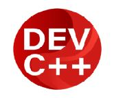

Instalar o Dev-C++
Para instalar o Dev-C++, baixe-o do Source Forge e execute o instalador, selecionando o idioma e as opções padrão. Após a instalação, na primeira execução, selecione "Português (Brazil)" e o tema, depois clique em "Ferramentas" > "Opções do Compilador" e adicione o comando -Wall -ansi -O2 às opções do compilador, clicando em "OK" para finalizar.
Passos para a Instalação
- Download: Pesquise por "Dev C++" no Google e clique no link do Source Forge para baixar o instalador.
- Instalação: Execute o arquivo baixado e siga as instruções, escolhendo o idioma e aceitando as opções padrão.
- Primeira Execução: Ao abrir o Dev-C++ pela primeira vez, selecione "Português (Brazil)" e escolha um tema.
- Configuração: Após a instalação, na primeira execução, selecione "Português (Brazil)" e o tema, depois clique em "Ferramentas" > "Opções do Compilador" e adicione o comando -Wall -ansi -O2 às opções do compilador, clicando em "OK" para finalizar.
Passos para a Configuração
Iniciar o Dev-C++
Após a instalação, clique no botão para terminar e iniciar o Dev-C++.
Configuração Inicial
Selecione "Português (Brazil)" como idioma e clique em "Next". Escolha a opção para não ativar funções extras (por exemplo, "No, I prefer to use Dev-C++ without it") e clique em "Next".
Opções do Compilador
Vá em "Ferramentas" (Tools) > "Opções do Compilador" (Compiler Options). Na aba "Compilador" (Compiler), marque a opção "Adicionar os seguintes comandos quando chamar o compilador:" (Add the following commands when calling the compiler). Digite o seguinte comando no campo de texto: -Wall -ansi -O2. Clique em "OK" para fechar a janela e finalizar a configuração.
Exemplo Simples em C:
Exemplo: Função para Somar Dois Números
#include <stdio.h> int main() { printf("Olá pessoal, tudo bem?"); return 0; }